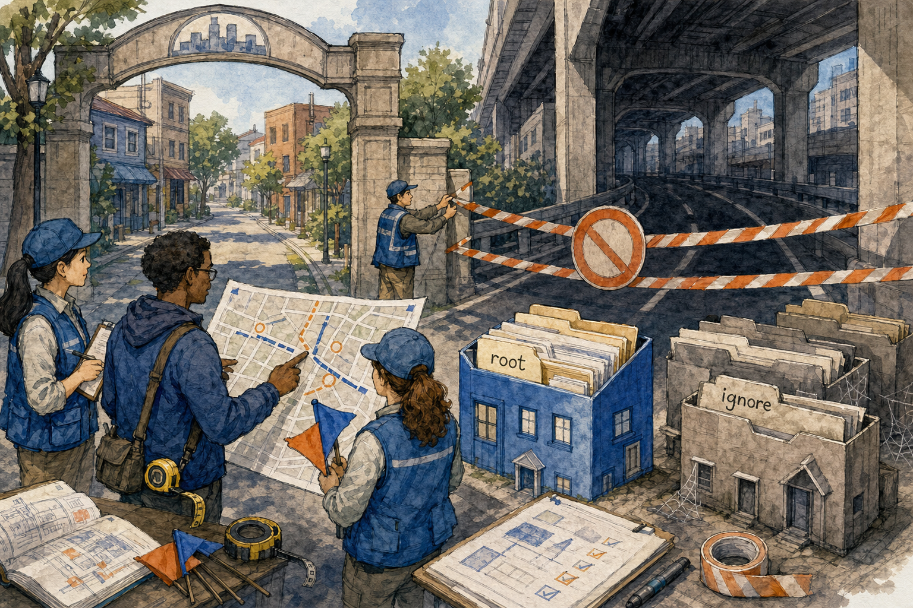
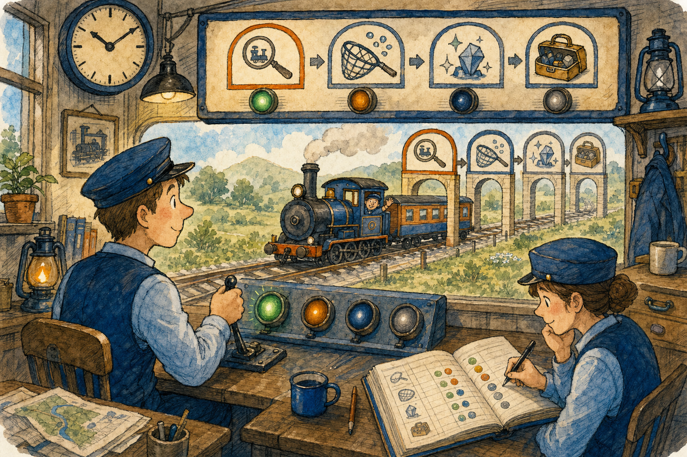

KANDA Reasoner Help
Show Project to AI
A first-time user guide for preparing the rules and project files an AI needs before programming work begins.
What This Tab Does
In plain English: This tab prepares the files an AI needs before it can safely help with your project. It does not change your application code. It creates copies, summaries, indexes, archives, instructions, and status files for the AI to read.
The AI needs two different kinds of context:
- First Prompt Files - the rule book that tells the AI how to work, which safeguards to follow, and how to request more context.
- Second Prompt Files - the current project map, source archives, images, Error Memory, validation state, and handoff information.
Before You Start

- Open the Show Project to AI tab.
- Check Project Root. It must be the main folder of the project you want the AI to work on.
- Use Browse... when the displayed folder is wrong.
- Finish any large copy, update, or build operation that is still changing the project.
- Leave the ZIP limit at 500 MB unless the AI service requires smaller files.
Example Project Root: E:\kanda_reasoner
Recommended First-Time Workflow

- Confirm Project Root.
- Select the ZIP size.
- Click the green Create First and Second Prompt Files button.
- Wait until First Prompt Files finish successfully.
- Wait until Second Prompt Files and ZIP export finish successfully.
- Click Path to First Prompt Files and open that folder.
- Start a new AI conversation and upload the First Prompt Files.
- Wait for
STARTUP PACK LOAD CHECKwith statusCOMPLETE. - Click Path to Second Prompt Files and open that folder.
- Upload the Second Prompt Files.
- Wait for
PROJECT READY CHECKending withWAIT_FOR_TASK. - Only then describe the real programming task.
Why First Prompt Files Must Be Uploaded First
Think of a new employee:
- First Prompt Files are the employee handbook, safety training, and working rules.
- Second Prompt Files are the building map, current records, source material, and job folder.
Uploading the project before the rules can give the AI a large amount of information without the project's required boundaries, validation process, or freeze safeguards.
Main Buttons and Fields
Create First and Second Prompt Files
This is the green button and the recommended choice for a new AI session. It creates the two groups in the correct order. It does not send anything to an AI automatically.
Project Root and Browse...
Project Root identifies the project being prepared. Browse... opens a folder chooser so you do not need to type the path.
Create First Prompt Files
Creates only the startup instructions and prompt-library delivery. Use it when startup rules must be refreshed but the project handoff remains current.
Path to First Prompt Files
Opens the first upload folder, normally E:\kanda_reasoner_show_project_to_AI\first_prompt_files.
Create Second Prompt Files
Creates the current project handoff, runs collection, prepares Error Memory exports, and creates upload ZIP packages. Use it after meaningful project changes.
Path to Second Prompt Files
Opens the second upload folder, normally E:\kanda_reasoner_show_project_to_AI\second_prompt_files.
ZIP size limit
The selected value controls the maximum target size of each standalone ZIP part. It does not reduce project quality or remove source.
- 500 MB: fewer files when large uploads are accepted.
- 400, 300, or 200 MB: middle choices for less reliable upload limits.
- 100 MB: more numbered parts for strict upload limits.
If a file says part01_of_03, upload all three parts in numerical order.
Where Files Are Created and Why
Project source: E:\kanda_reasoner
Generated AI support area: E:\kanda_reasoner_show_project_to_AI
The support files stay outside the project so generated ZIPs and evidence are not mistaken for source code, scanned again, added to version control, or mixed with files developers edit directly.
What the Second Prompt Files Contain
- _RUN_COLLECTOR_STATUS.txt: confirms whether collection and ZIP export completed.
- ai_handoff_upload ZIP: preferred compact AI-readable project briefing.
- Compact Error Memory: current lessons about mistakes that should not be repeated.
- source_archive_partXX_of_YY ZIP: exact project source, split when needed.
- png_assets_partXX_of_YY ZIP: image assets for visual inspection or exact reconstruction.
- error_memory_full ZIP: complete Error Memory; use only when the compact lessons are insufficient or an audit is requested.
- ai_handoff_all_in_one ZIP: convenience or fallback archive.
Orange-Label Reminder Buttons
The orange-label buttons copy focused instructions to the clipboard. They do not recreate First or Second Prompt Files. Use them during a long conversation when the AI starts forgetting a specific rule.
Answer, Validate, Freeze, Memorize Error
Use when the AI forgets the complete work cycle. It restores the separation between answering, validation, freeze, and Error Memory.
Install + Validate Flow
Use when terminal instructions end incorrectly. Successful installation waits about two seconds and clears; validation, freeze, diagnostics, and errors wait for two Enter presses and then clear. The terminal stays open.
Bridges: Startup
Use when the AI forgets permanent beginning-of-session rules such as module size, project boundaries, no-leak behavior, durable-document routing, terminal cleanup, or runtime evidence.
Bridges: On Demand
Use when specialist guidance is needed but the AI has forgotten which routed prompt or owner to load.
Anti-hallucination: short
Use for a compact reminder when the AI starts guessing paths, files, symbols, source behavior, or validation results.
Anti-hallucination: full
Use for difficult, repeated, high-risk, or evidence-heavy work that needs stronger source and uncertainty discipline.
Machine-Card: MCard Logic
Use only for Architecture Review Machine-Card work. It restores card ownership, synchronization, lifecycle, and stale-state safeguards.
Status, Success Checkpoints, and Common Mistakes
Status labels show whether a process is idle, running, finished, or failed. The log records stages, paths, warnings, counts, and errors. Files appearing in a folder do not by themselves prove that the complete operation succeeded.
After First Prompt Files
STARTUP PACK LOAD CHECK- startup status
COMPLETE - next action waiting for project files
After Second Prompt Files
PROJECT READY CHECK- correct project slug and root
- compact Error Memory loaded
- next action
WAIT_FOR_TASK
Common mistakes
- Sending the task before
PROJECT READY CHECK. - Uploading Second Prompt Files first.
- Selecting the wrong Project Root.
- Uploading only one numbered ZIP part.
- Opening full Error Memory for every task.
- Pasting every orange reminder instead of the relevant one.
- Assuming successful file creation means application code was validated.
Complete Example
You want an AI to add a button to E:\kanda_reasoner.
- Select
E:\kanda_reasoneras Project Root. - Leave ZIP size at 500 MB.
- Click Create First and Second Prompt Files.
- Upload the First Prompt Files and wait for
STARTUP PACK LOAD CHECK. - Upload the Second Prompt Files and wait for
PROJECT READY CHECK. - Describe the new button and where it should appear.
- If the AI later skips validation, use Answer, Validate, Freeze, Memorize Error.
Quick Reference
| Need | Use |
|---|---|
| Start a new AI work session | Create First and Second Prompt Files |
| Refresh only startup rules | Create First Prompt Files |
| Refresh only project context | Create Second Prompt Files |
| Find upload group one | Path to First Prompt Files |
| Find upload group two | Path to Second Prompt Files |
| Restore the full work cycle | Answer, Validate, Freeze, Memorize Error |
| Restore Install -> Enter x2 -> Validate terminal flow | Install + Validate Flow |
| Restore daily rules | Bridges: Startup |
| Request specialist routing | Bridges: On Demand |
| Stop AI guessing | Anti-hallucination short or full |
| Restore Machine-Card rules | MCard Logic |
Authority Boundary
Show Project to AI creates context and handoff files. It does not automatically upload them, change project source, prove a patch is correct, validate application behavior, or freeze a feature.